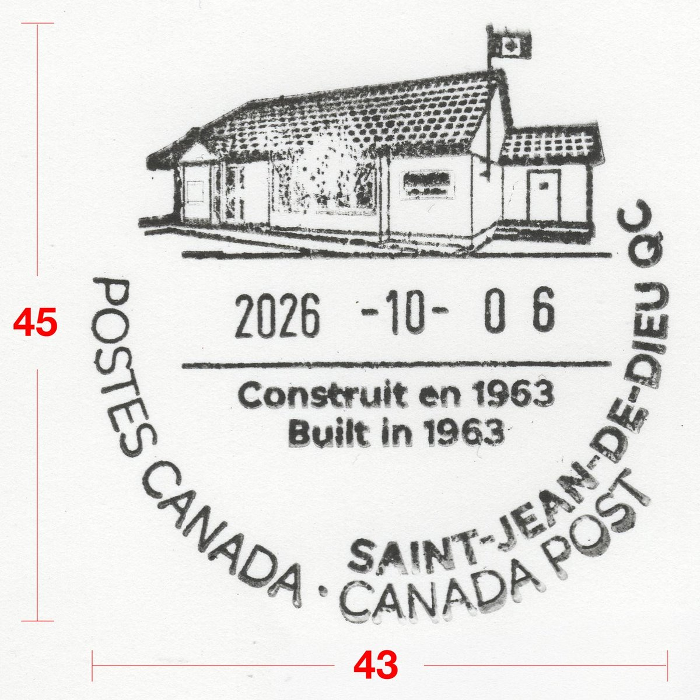

BP Saint-Jean-de-Dieu pictorial cancel
Construit en 1963 – Built in 1963
- Status
- Active
- Run dates
- 2023-01-01 to 2034-12-31
- Design
- "Construit en 1963 / Built in 1963"; post office
- Ink colour
- Black
- Designer
- Unknown
- Post office
- BP Saint-Jean-de-Dieu
73 rue Principale N
Saint-Jean-de-Dieu, QC G0L 3M0 - Subjects
- architecture, building, post office, postal history
Collect it by mail. Send your stamped covers, with a stamped return envelope, to the post office address above. How to collect pictorial cancels by mail · en français
 BP TadoussacWhale
BP TadoussacWhale BP Ste-Luce Succ Sur MerEmpress of Ireland / 1914-2014
BP Ste-Luce Succ Sur MerEmpress of Ireland / 1914-2014 BP St-PamphileDog
BP St-PamphileDog Montmagny Succ Bureau-ChefAccordion
Montmagny Succ Bureau-ChefAccordion